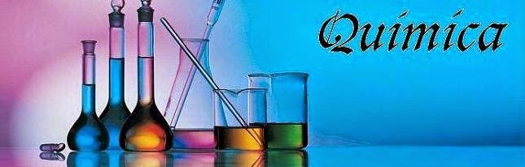

La química es la ciencia que nos revela los secretos de la materia, desde los elementos más pequeños e invisibles hasta los procesos más asombrosos que ocurren a nuestro alrededor. A través de la química, exploramos la estructura, las propiedades y las transformaciones de la materia, entendiendo cómo los átomos y moléculas interactúan entre sí para dar lugar a todo lo que conocemos: desde el aire que respiramos y el agua que bebemos, hasta los alimentos que consumimos y los materiales que usamos a diario. Esta disciplina es clave para comprender el mundo natural y para el desarrollo de nuevas tecnologías que transforman nuestra vida.
La química no solo se estudia en laboratorios; está presente en cada aspecto de nuestra vida cotidiana. La ropa que vestimos, los medicamentos que nos curan, los combustibles que mueven nuestros vehículos y los dispositivos que usamos, son todos productos de principios y procesos químicos. A través de esta asignatura, los estudiantes aprenden a identificar las reacciones y propiedades de las sustancias, a entender por qué y cómo ocurren los cambios a nivel molecular, y a predecir nuevos comportamientos de la materia bajo diferentes condiciones.
Esta asignatura abarca varios campos fascinantes. La química inorgánica estudia los compuestos no orgánicos y los elementos que componen la mayor parte del universo, desde los minerales de la Tierra hasta las estrellas en el cielo. La química orgánica se centra en los compuestos de carbono, la base de la vida, y nos ayuda a comprender desde cómo funcionan nuestras células hasta cómo se crean los plásticos. La química física nos enseña cómo se relacionan las leyes de la física con los fenómenos químicos, y la química analítica nos proporciona herramientas para medir y analizar sustancias, esencial para campos como la medicina, el medio ambiente y la industria.
A medida que los estudiantes se adentran en el estudio de la química, también aprenden a desarrollar habilidades fundamentales como el pensamiento crítico, la observación rigurosa y el análisis cuantitativo. La resolución de problemas en química requiere tanto creatividad como precisión, ya que muchas veces implica formular hipótesis, diseñar experimentos y analizar resultados de manera sistemática. Además, la química fomenta una comprensión más profunda de los desafíos globales, como el cambio climático, la contaminación y la búsqueda de energías sostenibles, permitiéndonos proponer soluciones científicas innovadoras y responsable.